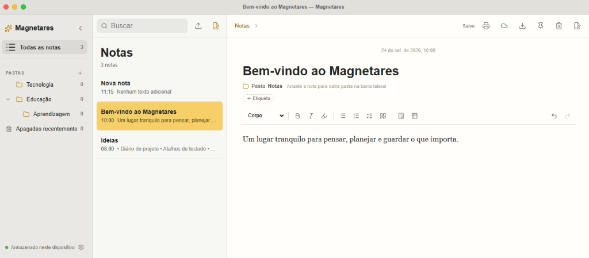
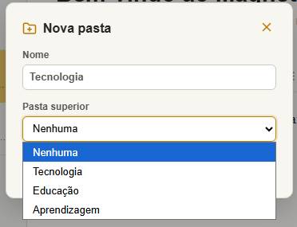
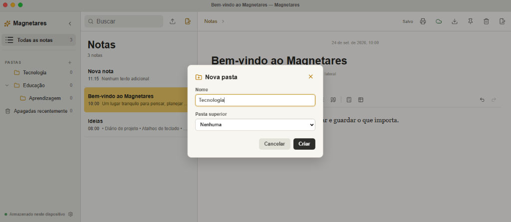
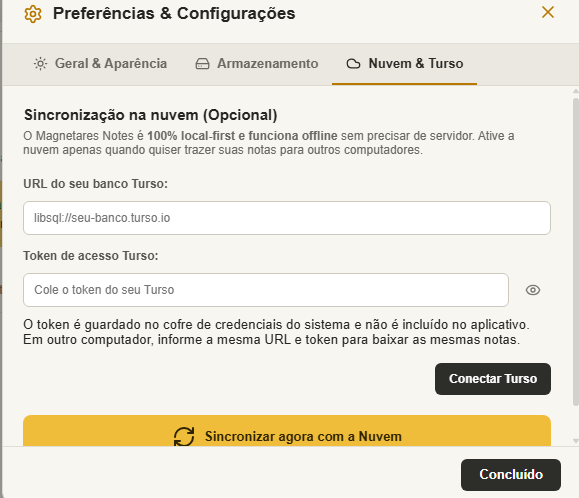
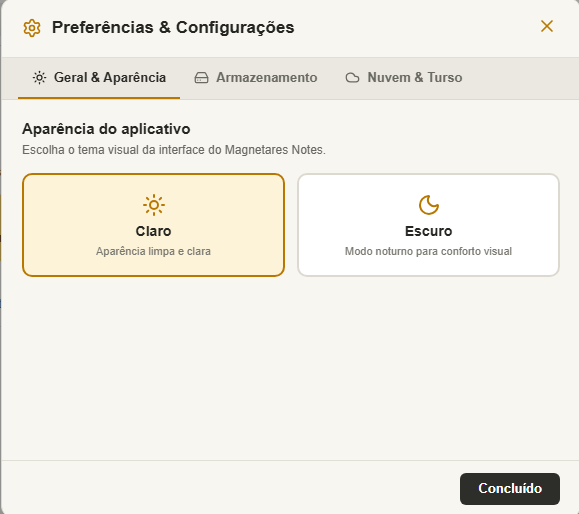

Escrita
Editor de Texto Rico
Interface limpa com suporte a títulos, checklists, citações, tabelas e modo de foco.
Interface & Experiência
Explore a interface do Magnetares Notes: um ambiente de escrita minimalista, organização fluida em órbitas e temas para o seu ritmo.

Interface limpa com suporte a títulos, checklists, citações, tabelas e modo de foco.

Organize suas notas com níveis ilimitados de subpastas e navegação rápida.

Estrutura flexível para categorizar suas notas, marcadores e notas fixadas.

Seus dados permanecem locais e sincronizam na nuvem quando você desejar.

Ajuste de diretório de banco de dados, atalhos, exportação e backups locais.